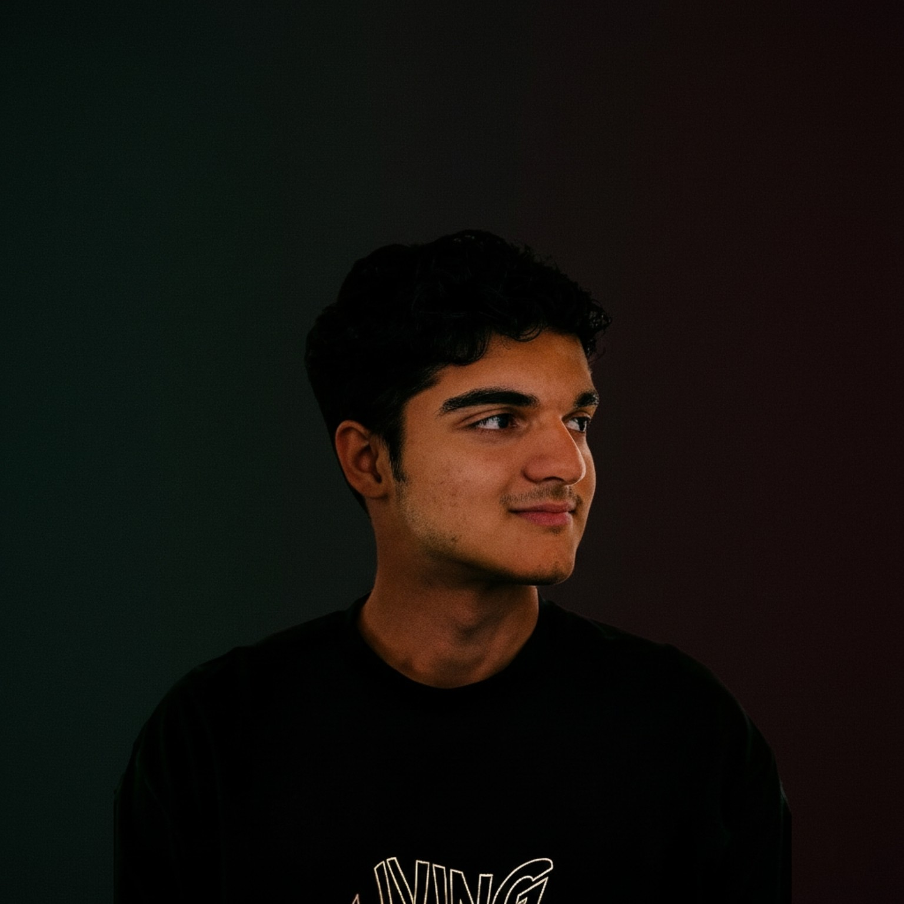

علی کلباسی
بنیانگذار و توسعهدهنده وب
من علی کلباسی هستم؛ توسعهدهنده وب و علاقهمند به طراحی و ساخت محصولات دیجیتال. ایده تیمساز را با هدف سادهتر کردن پیدا کردن افراد مناسب برای همکاری در پروژهها دنبال میکنم.
اطلاعات حرفهای
- نقش در پروژه
- طراحی و توسعه تیمساز
- زمینه فعالیت
- توسعه فرانتاند، بکاند و رابطهای برنامهنویسی (API)
مهارتها
- HTML
- CSS
- JavaScript
- PHP
- Laravel
- MySQL